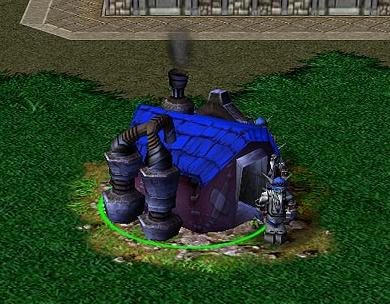

Что такое паттерн?
Паттерн (шаблон) - это реюзабельное решение, применимое к проблемам проектирования приложений, в нашем случае - при написании скриптов и приложений на JavaScript.
Начало
В 1995 Erich Gamma, Richard Helm, Ralph Johnson и John Vlissides написали книгу "Design Patterns: Elements Of Reusable Object-Oriented Software". Авторы позже стали известны как "Банда Четырех" (Gang of Four, or GoF). С выходом книги концепт паттернов начал набирать популярность, т.к. GoF удалось подробно описать некоторые техники разработки и подводные камни, с которыми сталкиваются программисты при их применении, а также представить 23 шаблона проектирования, позволяющих избежать наступания на некоторые грабли.
Зачем оно надо?
- Шаблоны - это проверенные решения: они обеспечивают твердые подходы к решению вопросов в разработке программного обеспечения, используя проверенные методы, которые отражают опыт и знания разработчиков, которые помогли определить их (что и делает их паттернами)
- Шаблоны можно легко переиспользовать: они, как правило, отражают решения-из-коробки, которые могут быть адаптированы под наши собственные потребности. Эта особенность делает их весьма надежными.
- Шаблоны выразительны: они имеют структуру и словарь для представленного решения, которые могут помочь элегантно описать даже довольно большие решения.
Паттерны не являются решением сами по себе. Они скорее схема решения, реализация которого в разных средах лежит на разработчиках.
Можно и без паттернов обойтись
Нет, нельзя. Мы уже юзаем паттерны каждый день: кросбраузерные селекторы jQuery, IIFE (немедленно выполняемые функции), прототипирование JavaScript Object и многое другое - всё это паттерны проектирования. Некоторые из них мы используем, даже не зная о том, что это паттерны - просто это лучшее (а иногда и единственное) решение задачи.
Категории паттернов проектирования
В книге GoF описано 23 паттерна проектирования. В настоящее время, спустя почти 20 лет, их количество огромно, и потому деление паттернов на категории абсолютно необходимо.
Принцип деления
Каждый шаблон фокусируется на конкретной проблеме проектирования объектно-ориентированного приложения. Он описывает, когда он применим, может ли он быть применен при прочих условиях, а также последствия его использования и необходимые компромиссы. Таким образом, категории паттернов, используемых для решения задач проектирования, перекликаются с категориями этих задач.
Creational Design Patterns
Порождающие паттерны предназначены для контроля механизмов инстанцирования объектов. Их использование позволяет сделать этот процесс максимально адекватным конкретной ситуации, в которой мы работаем. К этой категории относятся паттерны Constructor, Factory, Abstract, Prototype, Singleton and Builder.
Structural Design Patterns
Структурирующие шаблоны призваны организовывать взаимоотношения между объектами. Они помогают организовать систему так, что, когда одна из ее частей меняется, это не означает что измениться должна вся система. Это обеспечивает слабую связанность (dependency) компонентов приложения, "модульность". Представителями этой категории являются Decorator, Facade, Flyweight, Adapter and Proxy.
Behavioral Design Patterns
Поведенческие паттерны применяются для улучшения механизмов коммуникации объектов между собой. В отличие от структурирующих паттернов, которые определяют положение объектов в сиситеме, паттерны поведения определяют (что бы вы думали?) их поведение. Такими шаблонами являются Iterator, Mediator, Observer и Visitor.
Прежде чем перейти к собственно паттернам...
Паттерны проектирования объектно-ориентированных приложений, как и сами эти приложения, строятся на концепте классов и их объектов (To the rescue!). В JavaScript, как мы знаем, классов нет. Не то чтобы это привело к фундаментальным отличиям JavaScript-шаблонов, но не помешает вернуться к основам, прежде чем нырнуть в кроличью нору.
Классы в JavaScript
Классы можно "симулировать" с помощью функций:
function Product(prefix) {
this.prefix_ = prefix;
this.type_ = "";
this.setType = function(newType) {
this.type_ = newType;
};
this.type = function() {
return this.prefix_ + ": " + this.type_;
};
}
Объекты в JavaScript
Объект класса может быть создан с помощью ключевого слова "new":
var product = new Product("fruit");
product.setType("apple");
console.log( product.type() ); // fruit: apple
Также можно определить так называемый object literal:
var obj = {};
...и объект на основе прототипа:
Object.create( Object.prototype );
Существует 4 способа задать объекту свойства и методы:
// ECMAScript 3 compatible approaches
// 1. Dot syntax
// Set properties
newObject.someKey = "Hello World";
// Get properties
var value = newObject.someKey;
// 2. Square bracket syntax
// Set properties
newObject["someKey"] = "Hello World";
// Get properties
var value = newObject["someKey"];
// ECMAScript 5 only compatible approaches
// For more information see: http://kangax.github.com/es5-compat-table/
// 3. Object.defineProperty
// Set properties
Object.defineProperty( newObject, "someKey", {
value: "for more control of the property's behavior",
writable: true, // false by default - разрешено ли изменять свойство
enumerable: true, // false by default - является ли свойство перечислимым
configurable: true // false by default - можно ли переопределить свойство
});
// 4. Object.defineProperties
// Set properties
Object.defineProperties( newObject, {
"someKey": {
value: "Hello World",
writable: true
},
"anotherKey": {
value: "Foo bar",
writable: false
}
});
// Getting properties for 3. and 4. can be done using any of the
// options in 1. and 2.
Getters and setters в JavaScript
Мало кто знает об их существовании, поэтому обычно мы используем самописные методы. Переписав класс Product с их использованием, получим такой код:
function Product(prefix) {
this.prefix_ = prefix;
this.type_ = "";
}
Product.prototype = {
get type () {
return this.prefix_ + ": " + this.type_;
},
set type (newType) {
this.type_ = newType;
}
};
var product = new Product("fruit");
product.type = "apple";
console.log(product.type); // "fruit: apple"
console.log(product.type = "orange"); // "orange"
console.log(product.type); // "fruit: orange"
Object.defineProperty
В предыдущем примере я определил методы не в "классе", а на его прототипе. Забегая вперед - это один из паттернов, которые мы далее рассмотрим подробнее. Как вы можете видеть, я присвоил прототипу класса object literal, что в принципе нормально, но при таком подходе мы не сможем получить цепочку прототипирования (JavaScript-вариант наследования). Для того, чтобы обойтись без object literal, используется вышеупомянутый defineProperty:
function Product(prefix) {
this.prefix_ = prefix;
this.type_ = "";
}
Object.defineProperty(Product.prototype, "type", {
get: function () {
return this.prefix_ + ": " + this.type_;
},
set: function (newType) {
this.type_ = newType;
}
});
Третий аргумент defineProperty называется дескриптором свойства и позволяет контролировать его доступность:
var obj = {
foo: "bar",
};
//A normal object property
console.log(obj.foo); //logs "bar"
obj.foo = "foobar";
console.log(obj.foo); //logs "foobar"
delete obj.foo;
console.log(obj.foo); //logs undefined
Object.defineProperty(obj, "foo", {
value: "bar",
});
console.log(obj.foo); //logs "bar", we were able to modify foo
obj.foo = "foobar";
console.log(obj.foo); //logs "bar", write failed silently
delete obj.foo;
console.log(obj.foo); //logs bar, delete failed silently
В strict mode две последние попытки изменить свойство foo будут являться JavaScript errors.
var obj = {};
Object.defineProperty(obj, "foo", {
value: "bar",
writable: true
});
console.log(obj.foo); //logs "bar"
obj.foo = "foobar";
console.log(obj.foo); //logs "foobar"
writable: true позволяет менять значение свойства.
var obj = {};
Object.defineProperty(obj, "foo", {
value: "bar",
});
Object.defineProperty(obj, "foo", {
value: "foobar",
});
// Uncaught TypeError: Cannot redefine property: foo
configurable: false (по умолчанию) запрещает переопределение свойства через новый вызов Object.defineProperty. Если writable: false, но configurable: true, то это возможно.
var i, inventory;
inventory = {
"apples": 10
};
Object.defineProperty(inventory, "oranges", {
value: 13
});
Object.defineProperty(inventory, "strawberries", {
value: 3,
enumerable: true
});
for (i in inventory) {
console.log(i, inventory[i]);
}
console.log(inventory.propertyIsEnumerable("apples")); //logs true
console.log(inventory.propertyIsEnumerable("oranges")); //logs false
console.log(inventory.propertyIsEnumerable("strawberries")); //logs true
Как следует из предыдущего примера, enumerable: true делает свойство перечислимым.
Тот факт, что в JavaScript массив является объектом, позволяет привести еще один яркий пример на эту тему:
var arr = [3,4,9,7]; Object.getOwnPropertyNames(arr); // все свойства Object.keys(arr); // только перечислимые свойства
Основы повторили, перейдем к основной теме.

Creational Design Patterns
Как мы уже выяснили, порождающие шаблоны предназначены для решения проблем, связанных с контролем за созданием объектов. Мы рассмотрим следующие паттерны:
- Constructor - всегда создает объект определенного типа
- Singleton - класс с единственным инстансом и глобальной точкой доступа
- Prototype - инициализированный инстанс, который можно использовать для копирования или клонирования
- Factory Method - создает инстанс указанного класса на основе некоторых событий или переданных данных
- Abstract Factory - создает объект одного из набора классов без указания конкретного класса
Constructor Pattern
Этот паттерн создает объекты класса. Всё. Да, и это всё.
function Car( model, year, miles ) {
this.model = model;
this.year = year;
this.miles = miles;
this.toString = function () {
return this.model + " has done " + this.miles + " miles";
};
}
var civic = new Car( "Honda Civic", 2009, 20000 );
var focus = new Car( "Ford Focus", 2010, 5000 );
console.log( civic.toString() );
console.log( focus.toString() );
И да, мы это уже обсуждали чуть ранее. Что тут скажешь... Помните, я утверждал, что мы уже юзаем паттерны каждый день? :)
Также мы обсуждали, что для определения свойств и методов, общих для всех объектов, лучше использовать prototype:
function Car( model, year, miles ) {
this.model = model;
this.year = year;
this.miles = miles;
}
Car.prototype.toString = function () {
return this.model + " has done " + this.miles + " miles";
};
var civic = new Car( "Honda Civic", 2009, 20000 );
var focus = new Car( "Ford Focus", 2010, 5000 );
console.log( civic.toString() );
console.log( focus.toString() );
В этом случае метод toString не переопределяется для каждого объекта, созданного с использованием конструктора Car. Profit! Мы еще вернемся к этому вопросу, когда доберемся до Prototype Pattern.
Singleton Pattern
"Singleton" буквально переводится как "одиночка; вещь, не имеющая пары". Класс, построенный с помощью данного паттерна, ограничивает количество своих объектов до одного.
var mySingleton = (function () {
// Instance stores a reference to the Singleton
var instance;
function init() {
// Singleton
// Private methods and variables
function privateMethod(){
console.log( "I am private" );
}
var privateVariable = "Im also private";
var privateRandomNumber = Math.random();
return {
// Public methods and variables
publicMethod: function () {
console.log( "The public can see me!" );
},
publicProperty: "I am also public",
getRandomNumber: function() {
return privateRandomNumber;
}
};
};
return {
// Get the Singleton instance if one exists
// or create one if it doesn't
getInstance: function () {
if ( !instance ) {
instance = init();
}
return instance;
}
};
})();
Как следует из данного примера, синглтон возвращает не класс и не объект класса, а некую структуру, содержащую public свойства и методы. На самом деле, здесь используется еще один паттерн JavaScript, известный как Module Pattern, для отделения приватных аттрибутов класса от публичных, но это тема отдельной презентации (а то и пяти).
Для того чтобы получить объект синглтона нам не нужно использовать "new": глобальной точкой доступа является метод MySingleton.getInstance().
В книге GoF ситуация, в которой может быть применен данный паттерн, описана так:
- Класс должен иметь единственный инстанс, и он должен быть доступен для всех клиентов через известную точку доступа
- Инстанс класса должен быть расширяемым, и клиенты должны иметь возможность получить расширенную версию инстанса без модификации их кода
Во втором пункте описан вариант, когда нам может понадобиться код типа такого:
mySingleton.getInstance = function(){
if ( this._instance == null ) {
if ( isFoo() ) {
this._instance = new FooSingleton();
} else {
this._instance = new BasicSingleton();
}
}
return this._instance;
};
Здесь getInstance становится похожим на Factory метод, благодаря чему мы не должны обновлять каждую строку кода, в которой происходит обращение к нему: FooSingleton будет расширением класса BasicSingleton с таким же интерфейсом.
Prototype Pattern
Паттерн "прототип" делает возможным создание объектов на основе других, уже существующих объектов.
Прототипирование как таковое не подразумевает использования классов. Тех самых классов, которых в JavaScript вообще нет. По сути мы просто создаем копии уже функционирующих объектов, которые могли быть созданы с использованием любого другого порождающего паттерна.
В отличие от классов, JavaScript поддерживает прототипы нативно, и это пожалуй единственный случай, когда нам не нужно имитировать фичи других языков.
var myCar = {
name: "Ford Escort",
drive: function () {
console.log( "Weeee. I'm driving!" );
},
panic: function () {
console.log( "Wait. How do you stop this thing?" );
}
};
// Use Object.create to instantiate a new car
var yourCar = Object.create( myCar );
// Now we can see that one is a prototype of the other
console.log( yourCar.name );
Object.create создает объект, прототипом которого является первый аргумент этого метода. Второй аргумент, optionalDescriptorObjects, может содержать дескрипторы свойств, которые получит новый объект помимо унаследованных от прототипа.
var vehicle = {
getModel: function () {
console.log( "The model of this vehicle is.." + this.model );
}
};
var car = Object.create(vehicle, {
"id": {
value: MY_GLOBAL.nextId(),
// writable:false, configurable:false by default
enumerable: true
},
"model": {
value: "Ford",
enumerable: true
}
});
Использование Prototype может дать хороший выигрыш в производительности аппликейшена: как уже отмечалось ранее, определение метода на прототипе означает, что все объекты на его основе будут использовать один и тот же метод, вместо того чтобы создавать свою собственную копию.
Организовать прототипирование можно и без Object.create:
var vehiclePrototype = {
init: function ( carModel ) {
this.model = carModel;
},
getModel: function () {
console.log( "The model of this vehicle is.." + this.model);
}
};
function vehicle( model ) {
function F() {};
F.prototype = vehiclePrototype;
var f = new F();
f.init( model );
return f;
}
var car = vehicle( "Ford Escort" );
car.getModel();
Правда, в этом случае мы теряем возможность задавать read-only свойства, и вообще этот способ жутко похож на Сonstructor. Тем не менее, можно произвести еще один апгрейд, избавившись от hardcoded прототипа:
var beget = (function () {
function F() {}
return function ( proto ) {
F.prototype = proto;
return new F();
};
})();
Коротко и со вкусом. Что же касается read-only свойств - в конце концов, всегда можно запечатать (или вообще заморозить) полученный объект, получив нужный эффект на выходе (Object.preventExtensions, Object.seal, Object.freeze - обсудим это после презентации, если будет время и желание).
Factory Pattern
Factory принципиально отличается от других порождающих паттернов тем, что не требует от нас явного использования конструктора. Вместо этого, Фабрика предоставляет интерфейс для создания объектов, в котором мы можем указать тип создаваемого объекта.
Когда юзать фабрику:
- Когда настройка объекта отличается высокой сложностью
- Когда нужно легко генерировать различные инстансы объектов в зависимости от текущего окружения
- Когда мы работаем с большим количеством мелких объектов с общими свойствами
- Когда комбинируем объекты с инстансами других объектов, которые требуют только выполнения API-контракта (утиная типизация; уменьшает связанность)
// Types.js - Constructors used behind the scenes
// A constructor for defining new cars
function Car( options ) {
// some defaults
this.doors = options.doors || 4;
this.state = options.state || "brand new";
this.color = options.color || "silver";
}
// A constructor for defining new trucks
function Truck( options){
this.state = options.state || "used";
this.wheelSize = options.wheelSize || "large";
this.color = options.color || "blue";
}
// FactoryExample.js
// Define a skeleton vehicle factory
function VehicleFactory() {}
// Define the prototypes and utilities for this factory
// Our default vehicleClass is Car
VehicleFactory.prototype.vehicleClass = Car;
// Our Factory method for creating new Vehicle instances
VehicleFactory.prototype.createVehicle = function ( options ) {
switch(options.vehicleType){
case "car":
this.vehicleClass = Car;
break;
case "truck":
this.vehicleClass = Truck;
break;
//defaults to VehicleFactory.prototype.vehicleClass (Car)
}
return new this.vehicleClass( options );
};
// Create an instance of our factory that makes cars
var carFactory = new VehicleFactory();
var car = carFactory.createVehicle( {
vehicleType: "car",
color: "yellow",
doors: 6 } );
// Test to confirm our car was created using the vehicleClass/prototype Car
// Outputs: true
console.log( car instanceof Car );
console.log( car );
Создание Truck с помощью VehicleFactory:
var movingTruck = carFactory.createVehicle( {
vehicleType: "truck",
state: "like new",
color: "red",
wheelSize: "small" } );
// Test to confirm our truck was created with the vehicleClass/prototype Truck
// Outputs: true
console.log( movingTruck instanceof Truck );
console.log( movingTruck );
Создание фабрики траков на основе VehicleFactory:
function TruckFactory () {}
TruckFactory.prototype = new VehicleFactory();
TruckFactory.prototype.vehicleClass = Truck;
var truckFactory = new TruckFactory();
var myBigTruck = truckFactory.createVehicle( {
state: "omg..so bad.",
color: "pink",
wheelSize: "so big" } );
// Confirms that myBigTruck was created with the prototype Truck
// Outputs: true
console.log( myBigTruck instanceof Truck );
console.log( myBigTruck );
Когда не юзать фабрику? Когда процесс создания объектов и без нее достаточно прост. Темная сторона силы данного паттерна заключается в том, что он сильно усложняет простые приложения (в то время как, будучи на светлой стороне, без печенек, значительно упрощает приложения сложные).
Итого, если предоставление интерфейса для создания объектов не является целью библиотеки/фреймворка, лучше использовать другие порождающие паттерны.
Abstract Factory Pattern
В примере для Фабрики VehicleFactory мы "хардкодили" два типа объектов, которые она может возвращать. Абстрактная фабрика позволяет регистрировать типы объектов, которые она может создавать, на лету:
var abstractVehicleFactory = (function () {
// Storage for our vehicle types
var types = {};
return {
getVehicle: function ( type, customizations ) {
var Vehicle = types[type];
return (Vehicle ? new Vehicle(customizations) : null);
},
registerVehicle: function ( type, Vehicle ) {
var proto = Vehicle.prototype;
// only register classes that fulfill the vehicle contract
if ( proto.drive && proto.breakDown ) {
types[type] = Vehicle;
}
return abstractVehicleFactory;
}
};
})();
// Usage:
abstractVehicleFactory.registerVehicle( "car", Car );
abstractVehicleFactory.registerVehicle( "truck", Truck );
// Instantiate a new car based on the abstract vehicle type
var car = abstractVehicleFactory.getVehicle( "car" , {
color: "lime green",
state: "like new" } );
// Instantiate a new truck in a similar manner
var truck = abstractVehicleFactory.getVehicle( "truck" , {
wheelSize: "medium",
color: "neon yellow" } );
Таким образом, абстрактная фабрика группирует несколько фабрик со схожими целями. Этот паттерн можно нужно использовать в ситуации, когда фабрика должна быть независима от способа создания объектов, которые она генерирует, или она должна будет работать с динамическим набором конструкторов объектов.
Заключение
Порождающие шаблоны - это, безусловно, то, с чего стоит начать знакомство с JavaScript Design Patterns.
При подготовке презентации я в основном использовал одноименную книгу, доступную в онлайн: JavaScript Design Patterns (из нее я внаглую скопипастил почти все примеры). Отличное чтиво и для js-ninja, и для новичка. Материал в ней постоянно освежается, рассмотрено огромное количество плагинов/фреймворков в качестве примеров реализации тех или иных паттернов, присутствует список литературы (почти 40 дополнительных источников инфы). Must-read, IMHO.
Также мне очень пригодилась замечательная статья Advanced objects in JavaScript - поначалу я хотел сделать ее контент темой всей презентации, но отказался от этой мысли т.к. многое вы уже скорее всего знаете.

На этом у меня всё, спасибо за внимание :)